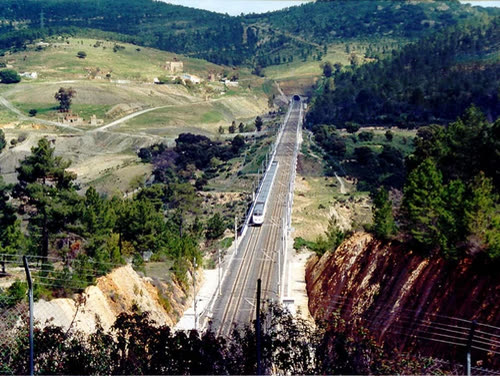

Alta velocità spagnola: seconda inchiesta Ue per possibile frode sui fondi
Indagine non è condanna, e finora nessun risultato è pubblico: ma i soldi europei, anche italiani, vanno controllati davvero, e gli esiti resi pubblici, a cominciare dal rapporto sui controlli di Adif del dicembre 2025.
Redazione Contrappunto · aggiornato il 06.11.2026


La Procura europea (EPPO) è l'ufficio dell'accusa dell'Unione europea: indaga sui reati contro i soldi dell'UE. Venerdì 6 novembre 2026 ha confermato un'inchiesta per possibile frode sui fondi europei destinati a rinnovare la sicurezza, i segnali e le comunicazioni della linea ad alta velocità Madrid-Siviglia, quella dove il 28 ottobre, vicino a Urda (Toledo), due treni si sono scontrati e sono morti 69 persone. È la seconda inchiesta dell'EPPO su questa linea: la prima riguarda la manutenzione dei binari dopo l'incidente di Adamuz, a gennaio (46 morti). Dell'incidente di Urda abbiamo scritto il 30 ottobre e delle dimissioni del ministro dei Trasporti il 4 novembre: La Spagna è in campagna elettorale: si vota il 29 novembre (Politico). Qui guardiamo solo cosa indaga la Procura europea e cosa ne dicono i giornali.
Vedi di più: 5 parole spiegate, cosa si racconta
Cosa si raccontaPolitico Europe e Anadolu raccontano una nuova inchiesta europea per frode «dopo» il disastro di Urda, quasi come risposta all'incidente. I giornali spagnoli (El País, El Mundo, ABC, La Vanguardia) danno i dettagli: perquisizioni e richieste di documenti, tre appalti da 136,4 milioni. ABC aggiunge, con fonti non nominate, il sospetto su aziende aggiudicatarie; El País e Politico precisano che l'indagine riguarda l'uso dei fondi, mentre le cause dello schianto le cerca un tribunale spagnolo. [Politico Europe] [Anadolu Agency] [El País] [El Mundo] [ABC] [La Vanguardia]
- Procura europea (EPPO)
- Ufficio dell'accusa indipendente dell'Unione europea: indaga e porta a giudizio i reati contro gli interessi finanziari dell'UE, come le frodi sui fondi europei (comunicato EPPO del 20 marzo 2026). Indaga d'ufficio quando apre il caso di propria iniziativa, senza denuncia: El Mundo scrive che è un fatto «excepcional».
- UCO
- Unità centrale operativa della Guardia Civil, la polizia militare spagnola: ha eseguito le richieste di documenti per conto della Procura europea (El País, El Mundo, La Vanguardia).
- Adif e AESF
- Adif è il gestore pubblico della rete ferroviaria spagnola; l'AESF è l'Agenzia statale per la sicurezza ferroviaria (El País, Politico). Il Tribunal de Cuentas è l'organo spagnolo che controlla i conti pubblici (El Mundo).
- LZB ed ERTMS
- Il LZB è il sistema di protezione automatica dei treni, quello originale della linea, che impedisce a due treni di trovarsi nello stesso punto (El País). L'ERTMS è il sistema europeo più moderno che lo sostituisce (El País, La Vanguardia). Il 28 ottobre il LZB è caduto alle 8:31 (El País).
- Fondi Next Generation
- Fondi europei del piano di ripresa dopo la pandemia, in Spagna «Plan de Recuperación, Transformación y Resiliencia» (El Mundo, La Vanguardia). Per due degli appalti El País cita anche il fondo europeo per lo sviluppo regionale (FESR).
- La Procura europea ha confermato il 6 novembre una seconda inchiesta per possibile frode sui fondi UE della linea Madrid-Siviglia, in Spagna; la Guardia Civil ha chiesto documenti ad Adif, all'Agenzia per la sicurezza ferroviaria e al Tribunal de Cuentas.
- Per El País e La Vanguardia nel mirino ci sono tre appalti del 2021 da 136,4 milioni; la Procura non ha detto cosa cerca né se i soldi siano stati spesi male (Politico).
Politico e Anadolu la presentano come la risposta europea al disastro di Urda, in Spagna; El País, El Mundo, ABC e La Vanguardia danno i dettagli: richieste di documenti e tre appalti da 136,4 milioni. Regge a metà: la Procura indaga sui fondi, non sulle cause dello schianto (le cerca il tribunale di Orgaz), e non ha reso pubblico alcun risultato. Indagine non è condanna, e nessuno è indicato per nome. Ma due inchieste, entrambe aperte dopo i morti, dicono che i fondi sono esaminati solo ora, anche se il Tribunal de Cuentas aveva approvato a dicembre 2025 un rapporto sui controlli di Adif (La Vanguardia). Sono soldi europei, quindi in parte anche nostri: quel rapporto e gli esiti si rendono pubblici. La Spagna è in campagna elettorale, si vota il 29 novembre (Politico). [1] [2] [3] [4] [5] [6]
La verifica punto per punto4 passaggi, 7 fonti
Qui sotto ogni cosa scritta sopra, una per una, con le fonti. Confermato: lo dice un documento originale o più fonti lette. Plausibile: lo riportano fonti serie, ma non abbiamo letto l'originale. Discordante: le fonti danno numeri diversi, e diciamo quali. Ipotesi e Opinione sono il nostro ragionamento, separato dai fatti.
Cosa ha fatto la Procura europea
Venerdì 6 novembre 2026 la Procura europea ha confermato un'inchiesta per «un posible fraude que afecta fondos europeos destinados a la renovación y la mejora de la seguridad, la señalización y los sistemas de comunicaciones» sulla linea Madrid-Siviglia, per «significant public interest» (ABC, che cita la nota della Procura; Anadolu). Agenti della UCO sono andati negli uffici di Adif, dell'Agenzia statale per la sicurezza ferroviaria e del Tribunal de Cuentas a chiedere documenti (El País, El Mundo, La Vanguardia). L'inchiesta parte d'ufficio, dopo l'incidente di Urda (El País); l'EPPO non ha chiarito cosa cerchi né se siano stati spesi male dei soldi, e non ci sono risultati pubblici (Politico). La Spagna è in campagna elettorale: si vota il 29 novembre, e l'incidente è avvenuto poche settimane prima del voto (Politico).
Gli appalti nel mirino
Secondo El País e La Vanguardia, i fascicoli riguardano tre appalti del 2021 per 136,4 milioni di euro finanziati con fondi Next Generation: il principale, circa 93,8 milioni, per sostituire il LZB con l'ERTMS e rinnovare segnalamento e telecomunicazioni; gli altri due, da 21 e 21,5 milioni, per i circuiti di binario e per gli scambi, tra cui quelli di Urda. Il 28 ottobre il LZB è caduto alle 8:31; per Puente, riferisce El País, si era già spento 170 volte nel 2026. Nessuna fonte che abbiamo letto indica indagati per nome.
Cosa cerca e che nesso ha con l'incidente
ABC scrive, con fonti delle forze di sicurezza, che l'inchiesta si fonda sul «sospecha de irregularidades en las empresas adjudicatarias» e che il passaggio da LZB a ERTMS «pudo provocar el accidente de Urda»; la Procura, secondo Politico, non ha detto cosa cerca, e per El País l'inchiesta corre in parallelo a quella del tribunale di Orgaz, che cerca le cause. Anche la data della prima inchiesta cambia: El País scrive 30 gennaio, mentre il comunicato dell'EPPO la conferma il 20 marzo e Politico, Anadolu, ABC ed El Mundo scrivono «marzo».
Il nostro punto
Indagine non è condanna: nessuna azienda o persona è indicata per nome, e finora non c'è un risultato pubblico. Due inchieste europee sugli stessi binari, entrambe aperte dopo i morti, dicono che l'uso dei fondi viene esaminato solo ora. Un controllo, però, c'era già: secondo La Vanguardia il Tribunal de Cuentas aveva approvato a dicembre 2025 un rapporto sulle procedure di gestione e controllo di Adif per i fondi del piano di ripresa, e la UCO ora lo ha chiesto. Non sappiamo cosa dica, e la domanda diventa se quei controlli bastassero. I fondi sono europei, quindi in parte anche italiani: quel rapporto e gli esiti delle inchieste vanno resi pubblici.
Fonti7, tutte con il link
- EU prosecutors open second fraud probe into Spanish high-speed rail (6 novembre 2026) (Politico Europe) · consultata il 06.11.2026
- EU prosecutor launches new fraud probe into Spain's high-speed rail line (6 novembre 2026) (Anadolu Agency) · consultata il 06.11.2026
- La Fiscalía Europea investiga un presunto fraude en las obras de la alta velocidad tras el accidente de Urda (6 novembre 2026) (El País) · consultata il 06.11.2026
- La Fiscalía Europea pone en marcha una operación con la UCO por la tragedia de Urda y reclama documentación a Adif (6 novembre 2026) (El Mundo) · consultata il 06.11.2026
- La Fiscalía Europea investiga irregularidades en el mantenimiento y el cambio del LZB de la línea de Urda (6 novembre 2026) (ABC) · consultata il 06.11.2026
- La Fiscalía Europea lanza una operación con la UCO por los contratos de Adif tras el accidente de Urda (6 novembre 2026) (La Vanguardia) · consultata il 06.11.2026
- Spain: EPPO launches investigation into possible fraud involving EU funds for maintenance of Madrid-Seville high-speed rail line (20 marzo 2026) (Procura europea (EPPO)) · consultata il 06.11.2026
Testo preparato con strumenti di intelligenza artificiale e pubblicato senza revisione umana. Come lavoriamo